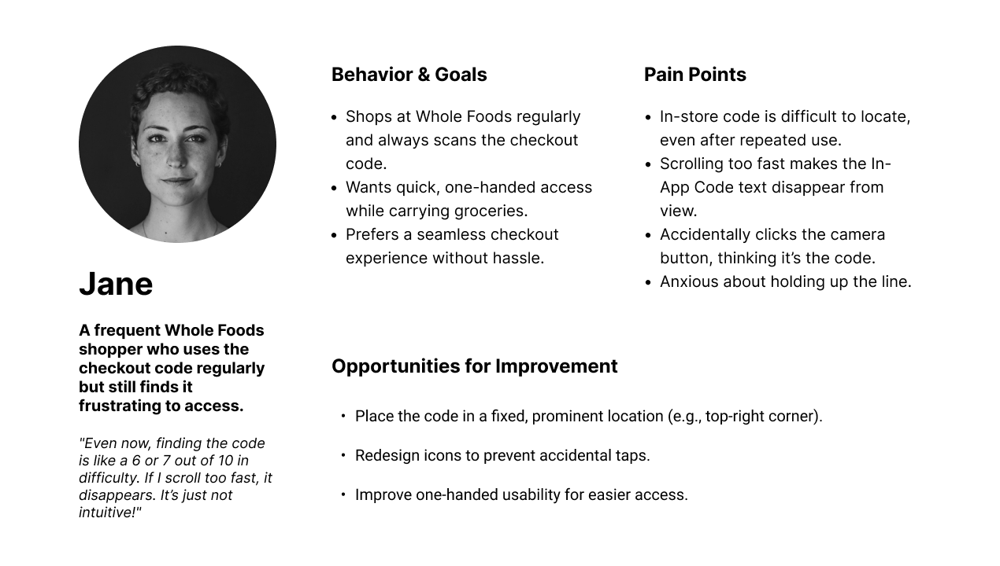
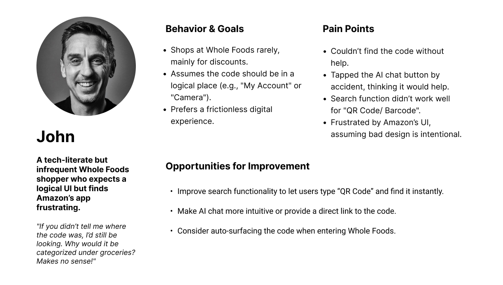
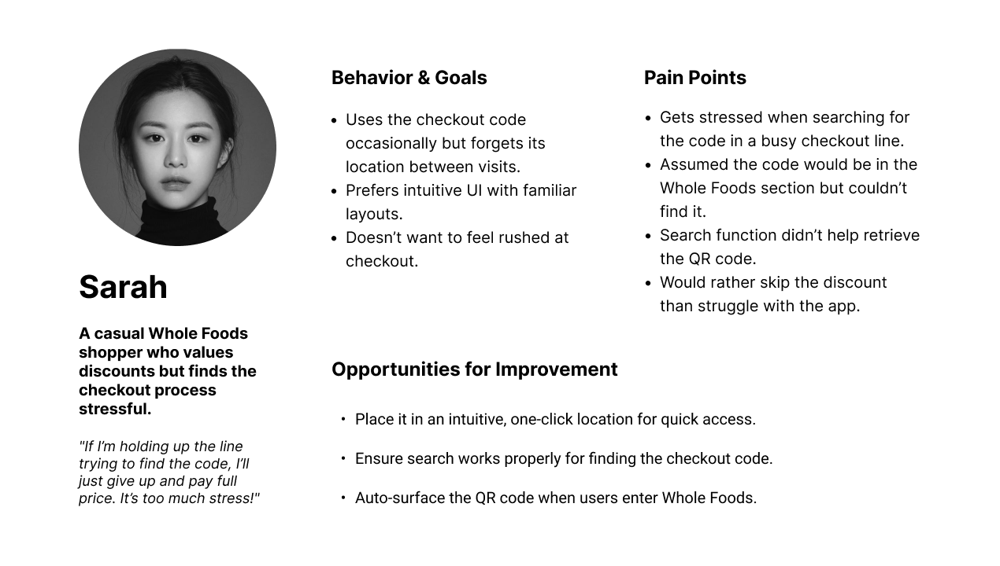
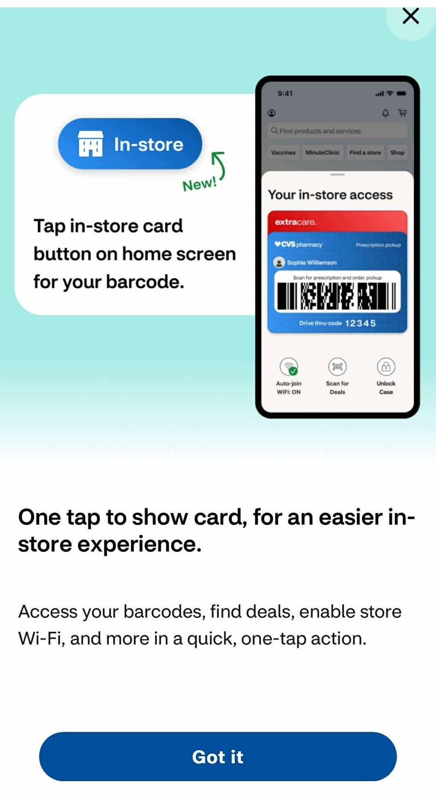
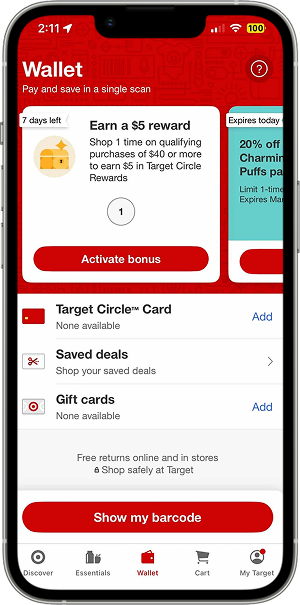
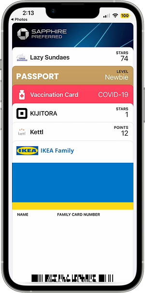
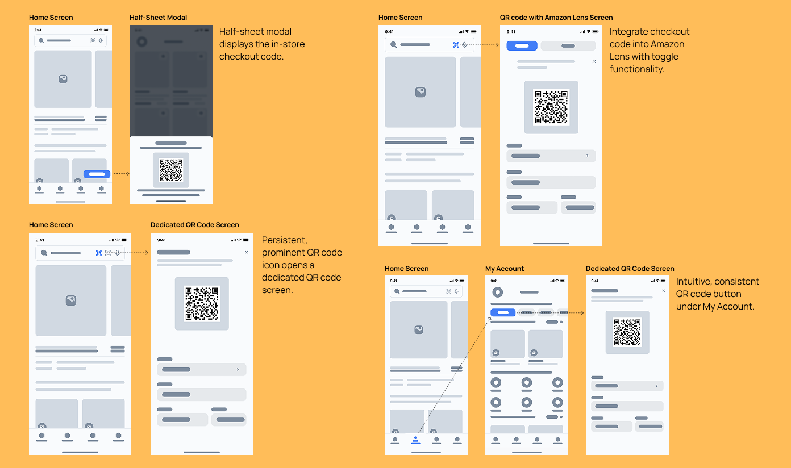
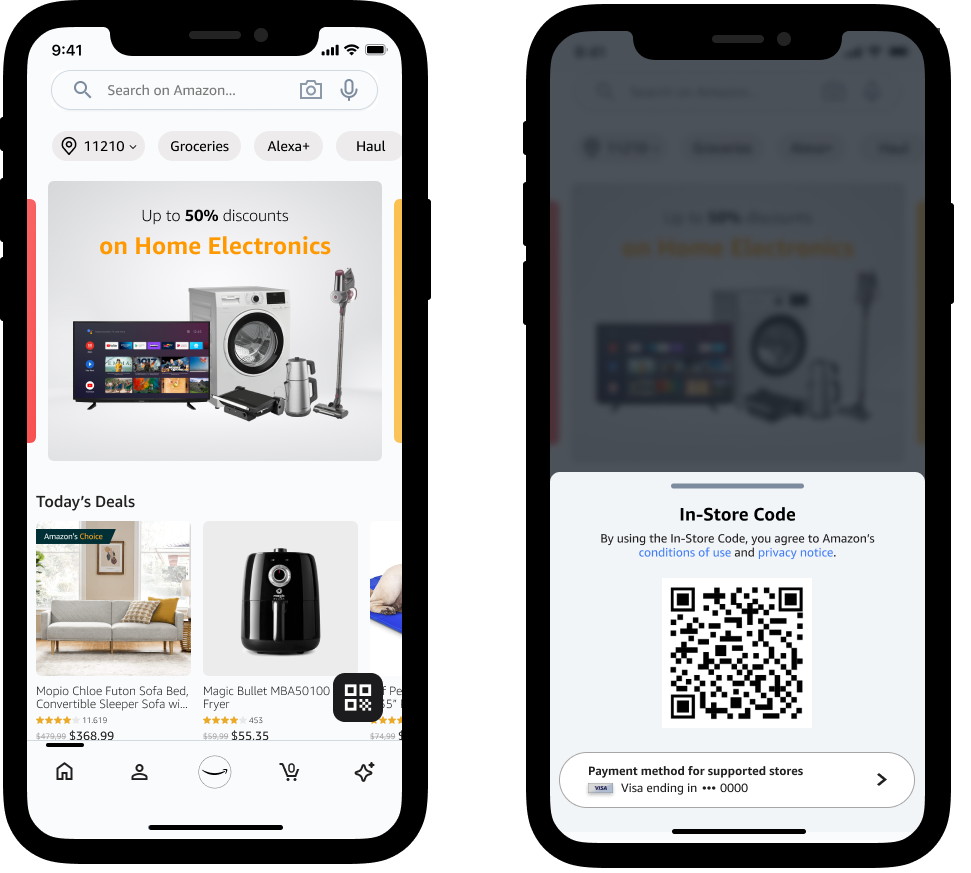
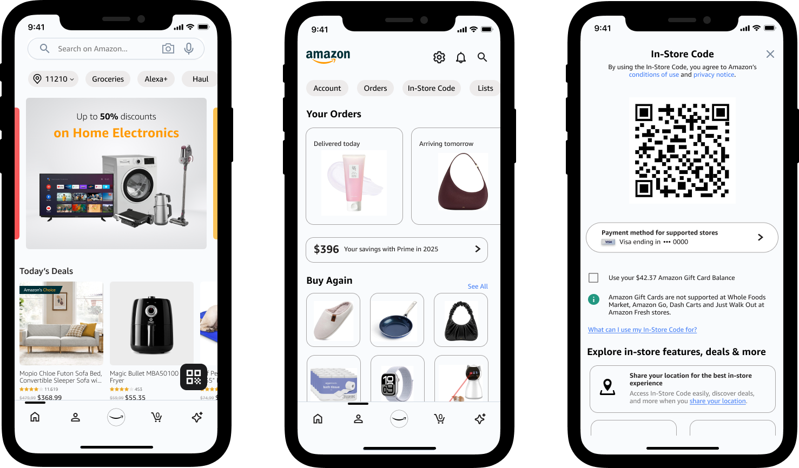
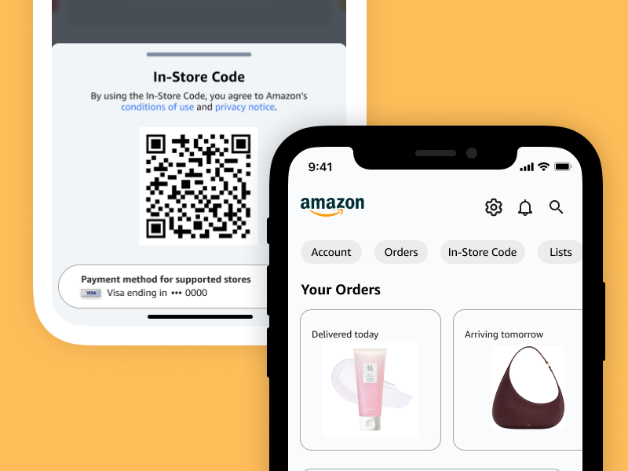

User Research
To better understand user frustrations, I conducted 6 interviews and 2 rounds of usability tests. Here's what I found:



38%
expected the Amazon Lens icon to generate the in-store code but it didn't.
68%
searched in 'My Account' but couldn't find the in-store code.
40%
were frustrated by navigating through multiple sections.
Competitor Analysis



Paper Prototyping & Low Fidelity Wireframing
Based on my research, I explored various design solutions including a dedicated QR code button, integration with Amazon Lens, and a consistent feature placement under 'My Account'.


Usability Testing
High-Fidelity Wireframing
Building on user testing insights, I implemented two key changes to improve the checkout experience:

Solution 1: A distinct QR code button appears when users enter a Whole Foods store, providing instant access. The Amazon Lens icon has also been updated to a camera symbol for better user recognition.
This distinct QR code button ensures quick and effortless access for all shoppers — whether they need instant visibility, a seamless one-tap experience, or a clean, accessible design that reduces friction at checkout.

Solution 2: A dedicated 'In-Store Code' option under 'My Account' ensures consistent access to the checkout code.
This in-store checkout code feature in 'My Account' provides easy access for all shoppers — whether they need consistent visibility, quick manual access, or an intuitive and organized experience that enhances accessibility and reduces friction.

Interactive Figma Prototype
Explore the interactive prototype to see the key user flows:
Tools & Methods
- Figma for wireframing, prototyping, and design system creation
- Marvel for paper prototyping and early concept validation
- Adobe Creative Suite for visual asset creation
- WCAG guidelines for accessibility compliance and testing
- User interviews and surveys for qualitative research
Impact & Results
Next Steps
- Conduct extensive A/B testing with the new QR code button placement to optimize its visibility and accessibility.
- Explore integration possibilities with digital wallet systems for even faster checkout.
- Implement location-based triggers to automatically surface the checkout code when customers enter Whole Foods stores.
- Gather quantitative data on checkout times to measure the impact of these improvements.
Reflection
This project marks my first comprehensive end-to-end UX case study, where I tackled improving the Whole Foods in-store checkout experience for customers. Through this journey, I've grown significantly in user-centered design methodologies, from conducting thorough user research to crafting data-driven solutions that enhance the shopping experience.